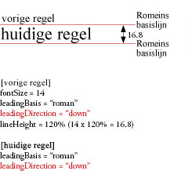
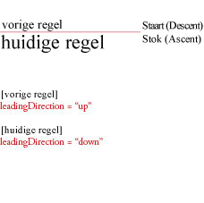
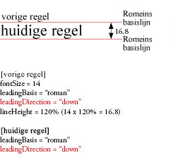
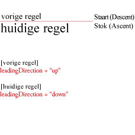

| Pakket | flashx.textLayout.formats |
| Klasse | public final class LeadingModel |
| Overerving | LeadingModel |
| Taalversie: | ActionScript 3.0 |
| Runtimeversies: | Flash Player 10, AIR 1.5 |
leadingModel van de klasse TextLayoutFormat, die bestaat uit geldige combinaties van de basis en de richting voor de regelafstand. De regelafstandsbasis beschrijft welke basislijnen de regelafstand (of lineHeight) van regels in een alinea bepalen. De richting bepaalt of de eigenschap lineHeight verwijst naar de afstand tussen de basislijn van een regel en de basislijn van de vorige regel of naar de afstand tussen de basislijn van een regel en de basislijn van de volgende regel.

 



Verwante API-elementen
TextLayoutFormat.lineHeight
flash.text.TextField
flash.text.engine.TextLine
 Overerfde openbare eigenschappen verbergen
Overerfde openbare eigenschappen verbergen Overerfde openbare eigenschappen weergeven
Overerfde openbare eigenschappen weergeven
| Constante | Gedefinieerd door | ||
|---|---|---|---|
| APPROXIMATE_TEXT_FIELD : String = "approximateTextField" [statisch] Geeft een regelafstandsmodel op dat het meest lijkt op het regelafstandsgedrag van TextField. | LeadingModel | ||
| ASCENT_DESCENT_UP : String = "ascentDescentUp" [statisch] Geeft aan dat de basis voor de regelafstand ASCENT/DESCENT is en de richting UP. | LeadingModel | ||
| AUTO : String = "auto" [statisch] Geeft aan dat het regelafstandmodel automatisch wordt gekozen op basis van de eigenschap locale van de alinea. | LeadingModel | ||
| BOX : String = "box" [statisch] Geeft een regelafstandmodel op basis van het CSS-model voor inlineopmaak op, waarbij regelvakken opeenvolgend worden gestapeld. | LeadingModel | ||
| IDEOGRAPHIC_CENTER_DOWN : String = "ideographicCenterDown" [statisch] Geeft aan dat de basis voor de regelafstand IDEOGRAPHIC_CENTER is en de richting down. | LeadingModel | ||
| IDEOGRAPHIC_CENTER_UP : String = "ideographicCenterUp" [statisch] Geeft aan dat de basis voor de regelafstand IDEOGRAPHIC_CENTER is en de richting UP. | LeadingModel | ||
| IDEOGRAPHIC_TOP_DOWN : String = "ideographicTopDown" [statisch] Geeft aan dat de basis voor de regelafstand IDEOGRAPHIC_TOP is en de richting DOWN. | LeadingModel | ||
| IDEOGRAPHIC_TOP_UP : String = "ideographicTopUp" [statisch] Geeft aan dat de basis voor de regelafstand IDEOGRAPHIC_TOP is en de richting UP. | LeadingModel | ||
| ROMAN_UP : String = "romanUp" [statisch] Geeft aan dat de basis voor de regelafstand ROMAN is en de richting UP. | LeadingModel | ||
APPROXIMATE_TEXT_FIELD | Constante |
public static const APPROXIMATE_TEXT_FIELD:String = "approximateTextField"| Taalversie: | ActionScript 3.0 |
| Runtimeversies: | Flash Player 10, AIR 1.5 |
Geeft een regelafstandsmodel op dat het meest lijkt op het regelafstandsgedrag van TextField. Dit lijkt op ASCENT_DESCENT_UP omdat lineHeight verwijst naar de afstand van een ascent-basislijn van een regel ten opzichte van de descent-basislijn van de vorige regel. Basislijnposities lijken echter het meest op de posities die zijn bepaald door TextField, in plaats van gebruik te maken van metrieke gegevens die worden geboden door TextLine.
ASCENT_DESCENT_UP | Constante |
public static const ASCENT_DESCENT_UP:String = "ascentDescentUp"| Taalversie: | ActionScript 3.0 |
| Runtimeversies: | Flash Player 10, AIR 1.5 |
Geeft aan dat de basis voor de regelafstand ASCENT/DESCENT is en de richting UP. Met andere woorden, lineHeight verwijst naar de afstand van de ascent-basislijn van een regel ten opzichte van de descent-basislijn van de vorige regel.
AUTO | Constante |
public static const AUTO:String = "auto"| Taalversie: | ActionScript #IDEOGRAPHIC_TOP_DOWN |
| Runtimeversies: | Flash Player 10, AIR 1.5 |
Geeft aan dat het regelafstandmodel automatisch wordt gekozen op basis van de eigenschap locale van de alinea. Voor Japans en Chinees is de waarde IDEOGRAPHIC_TOP_DOWN. Voor alle andere talen is de waarde ROMAN_UP.
BOX | Constante |
public static const BOX:String = "box"| Taalversie: | ActionScript 3.0 |
| Runtimeversies: | Flash Player 10, AIR 1.5 |
Geeft een regelafstandmodel op basis van het CSS-model voor inlineopmaak op, waarbij regelvakken opeenvolgend worden gestapeld. Een regelvak wordt gedefinieerd als het begrenzende vak rond inlinevakken voor alle bladelementen op de tekstregel, nadat deze zijn uitgelijnd op basis van baselineShift, dominantBaseline, alignmentBaseline, enzovoort. Voor een bereik wordt het inlinevak verkregen door dezelfde regelafstand boven en onder de tekstinhoud toe te passen zodat de hoogte overeenkomt met lineHeight. Voor een inlineafbeelding wordt lineHeight genegeerd. Het inlinevak wordt afgeleid van de opgegeven afmetingen en opvulwaarden. Daarnaast wordt firstBaselineOffset genegeerd met dit regelafstandmodel.
Zie Regelafstandmodel voor vakken voor meer informatie.
IDEOGRAPHIC_CENTER_DOWN | Constante |
public static const IDEOGRAPHIC_CENTER_DOWN:String = "ideographicCenterDown"| Taalversie: | ActionScript 3.0 |
| Runtimeversies: | Flash Player 10, AIR 1.5 |
Geeft aan dat de basis voor de regelafstand IDEOGRAPHIC_CENTER is en de richting down. Met andere woorden, lineHeight verwijst naar de afstand van de ideografisch middelste basislijn van een regel ten opzichte van de ideografisch middelste basislijn van de volgende regel.
IDEOGRAPHIC_CENTER_UP | Constante |
public static const IDEOGRAPHIC_CENTER_UP:String = "ideographicCenterUp"| Taalversie: | ActionScript 3.0 |
| Runtimeversies: | Flash Player 10, AIR 1.5 |
Geeft aan dat de basis voor de regelafstand IDEOGRAPHIC_CENTER is en de richting UP. Met andere woorden, lineHeight verwijst naar de afstand van de ideografisch middelste basislijn van een regel ten opzichte van de ideografisch middelste basislijn van de vorige regel.
IDEOGRAPHIC_TOP_DOWN | Constante |
public static const IDEOGRAPHIC_TOP_DOWN:String = "ideographicTopDown"| Taalversie: | ActionScript 3.0 |
| Runtimeversies: | Flash Player 10, AIR 1.5 |
Geeft aan dat de basis voor de regelafstand IDEOGRAPHIC_TOP is en de richting DOWN. Met andere woorden, lineHeight verwijst naar de afstand van de ideografisch bovenste basislijn van een regel ten opzichte van de ideografisch bovenste basislijn van de volgende regel.
IDEOGRAPHIC_TOP_UP | Constante |
public static const IDEOGRAPHIC_TOP_UP:String = "ideographicTopUp"| Taalversie: | ActionScript 3.0 |
| Runtimeversies: | Flash Player 10, AIR 1.5 |
Geeft aan dat de basis voor de regelafstand IDEOGRAPHIC_TOP is en de richting UP. Met andere woorden, lineHeight verwijst naar de afstand van de ideografisch bovenste basislijn van een regel ten opzichte van de ideografisch bovenste basislijn van de vorige regel.
ROMAN_UP | Constante |
public static const ROMAN_UP:String = "romanUp"| Taalversie: | ActionScript 3.0 |
| Runtimeversies: | Flash Player 10, AIR 1.5 |
Geeft aan dat de basis voor de regelafstand ROMAN is en de richting UP. Met andere woorden, lineHeight verwijst naar de afstand tussen de romeinse basislijn van een regel en de romeinse basislijn van de vorige regel.
Wed Jun 13 2018, 11:42 AM Z